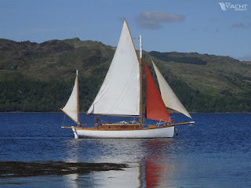
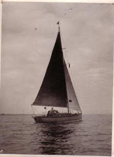
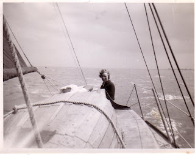
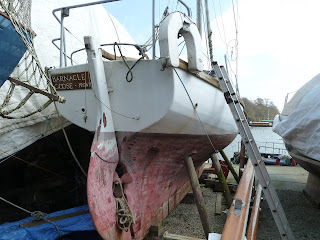
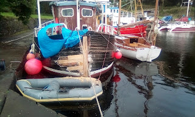
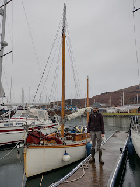
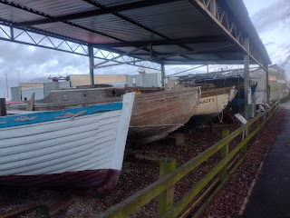

 |
| 'Sula' in Scotland |
{kind=link}
For me, Sula is Barnacle Goose, ‘Barney’,
the yacht my parents owned 1951-1957, in the first years of their
marriage. They’d bought her in Rye, fitted her out in a mud berth,
then sailed her home to the River Deben in Suffolk. My father was building up
his business as a yacht broker and was also offering a small variety of craft
for charter. In September 1951 Arthur and Evgenia Ransome hired Barnacle
Goose for a 12-day ‘carpet-slippered’ cruise from Waldringfield. They
visited Pin Mill on the River Orwell, the Walton Backwaters, the Orwell again.
They met old friends, visited favourite places and caught up with the East
Coast gossip.
 |
| Barnacle Goose in England |
{kind=link}
Perhaps she made some small difference to their lives?
Arthur’s ‘best little boat’, Nancy Blackett, had been a
Hillyard. Then there had been Selina King (aborted by the war) and Peter Duck
(unloved by the Ransomes though not by us). The Ransomes had been unsettled,
vacillating between London and the Lake District but after their little holiday
with Barnacle Goose they made the decision to buy another Hillyard, their
first Lottie Blossom (now Ragged Robin III).
Almost 50 years later, in 2000, I mentioned this brief charter cruise
in an article 'Other People's Dreams' written for the Aldeburgh Festival programme. It was my first ever boat article. 24 years after
that, in 2024, Robert Armstrong, on the Island of Kerrera, near Oban, read the article,
found my email address and sent me a message. He wondered whether I’d like an
update on Barnacle Goose’s new life as Sula? I responded with
almost embarrassing alacrity.
 |
| June Jones sailing BG of the coast of France |
{kind=link}
They dressed ‘Barney’ and proceeded to their
designated area within the anchorage. But the wind got up, the anchor dragged,
the engine wouldn’t start, the yacht rolled, the flags stuck – all the familiar
tribulations of ceremonial occasions at sea. Finally, they gave up and
re-anchored under the lee of Old Castle Point (East Cowes) with about 130 other
yachts. They opened their bar, cooked a festive supper and watched the fleet
illuminations and the firework displays. They let off some flares and blew
their foghorn, which was then taken up by assembled yachts.
That was Barnacle Goose’s big day out. Her
guests went home. My parents spent another week cruising the south coast then
returned to their favourite East Coast haunts of the Deben, the Alde and the
Walton Backwaters. I was born nine months later in April 1954, soon followed by
my brother in 1955. As we children continued to grow, so ‘Barney’ shrank, until
in 1957 she was sold and our parents bought Peter Duck.
 |
| Spotted by Peter Willis in Cornwall |
{kind=link}
By 2016 she was a shell. Her engine, cockpit, furniture had
been taken out of her; she’d been sunk and was full of mud. In most people’s
eyes she would have seemed a wreck, fit only for the yard bonfire -- if she
could be dried out enough to burn.
But this was when Barney’s luck changed.
Robert Armstrong was in Cornwall looking for a workboat. He
wanted something that he could live on, that would take him around the coast
and islands, as he travelled from job to job, and would also be a pleasure to
sail in the summer months. He spotted Barnacle Goose, and
although she had effectively been gutted as well as sunk, he could see that
she’d kept her shape, and her planking was in relatively good
order. ‘When I saw her beached at low tide, I knew I could make what
I needed out of her and as she was little more than a bare hull and deck, I had
a blank canvas to work from.’
Robert had grown up on a small family farm on Arran. He’d
learned to make do and mend and turn his hand to a variety of jobs. Even today
he goes home for lambing and haymaking, other livestock work and machinery
repair. When he was 13, he started building boats. ‘I was keen on fishing, and
it was the only way I could afford a boat. By the time I left home at 17 I'd
built about 5 boats, none of them very good but nobody died!’ He had been
taught to sail out of Lochranza, a small, former herring fishing village on a
sea loch, and had helped with wooden boat repairs and maintenance. He learned
much more than the techniques of boat-handling and maintenance; he developed an
understanding of the traditions of the islands, and the importance of
self-reliance and making practical use of what nature provides.
 |
| From English yacht to Scottish workboat |
{kind=link}
From Cornwall Robert brought Barnacle Goose back
by road to Portavadie, Loch Fyne. When he relaunched her after 3
months intense work, he gave her a new name for a fresh start. She became Sula,
the anglicised spelling of ‘Sulaire’, which means gannet in Gaelic and Old
Norse. Robert and Sula moved across Loch Fyne to Tarbert,
where he continued working on her interior. The following spring he made all
her spars. He didn’t cruise far in that first season as she didn’t handle well
before he added the mizzen. Now she is both fast and handy.
 |
| Sula and Robert on Kerrera |
{kind=link}
The summer of 2024 has been hard on Sula. Robert describes
it as the worst season he can remember for weather and passage making. Her
staysail split from luff to leach on Loch Fyne in a gale in July. Then she was
battered by Storm Ashley, with damage to the aft deck, cleats, winches, cockpit
bulkheads, aft deck beams and a number of broken frames. That was a hard night
on Kerrera with 66kts sustained and a tide 1.5m over prediction, that submerged
all that normally shelters the marina. It was not the worst winds Sula had
weathered but by far the most destructive sea state. For the first time since
her restoration in 2016, Sula needed to come ashore for the
2024-25 winter. A succession of storms battered the west coast through
2025. Now Robert has decided that the all-year-round life of a
workboat is too hard for a lady in her mid-80s. He’s looking for a new home for her, but it must be the right one. This little yacht is to be cherished.
Currently I’m writing Peter Duck’s story to
celebrate her 80th birthday. This brief glimpse of her
predecessor’s life reminds me that boats need luck, just as humans do. Yet
with care and practical skill, a small wooden yacht can outlive not just her
people but her much grander sisters. HMS Surprise who carried
the Queen in 1953 was scrap by 1961, so was HMS Vanguard.. A story adds interest, builds a sense of
personality but the two things that have saved Sula were not words
but deeds: first the solid goodness of her initial construction, and secondly
the practical determination of Robert Armstrong (and others like him) not to
abandon and move on, but problem-solve and in modern terms to ‘up-cycle’. In the
Woodbridge Boatyard there’s a covered area known as the Tent of Dreams where a
row of small wooden yachts, too good for the yard bonfire, wait for their luck
to change. A boatshelf of forgotten stories…
 |
| Waiting for their stories to be heard |
{kind=link}